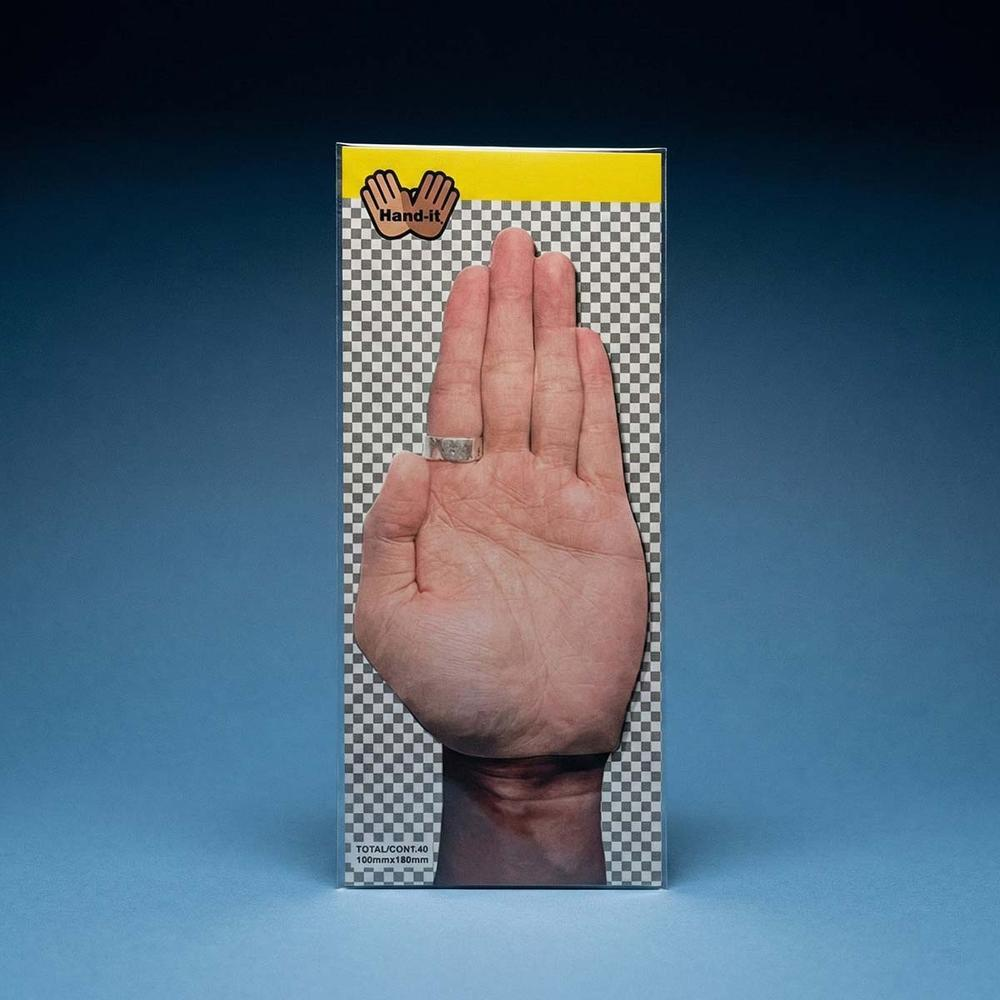

← Back to the sphere

Hand-it
Stationery design. Inspired by the everyday experience of writing important things on your hand and then struggling to wash them off. The “palm” is turned into a sticky note you can post anywhere.